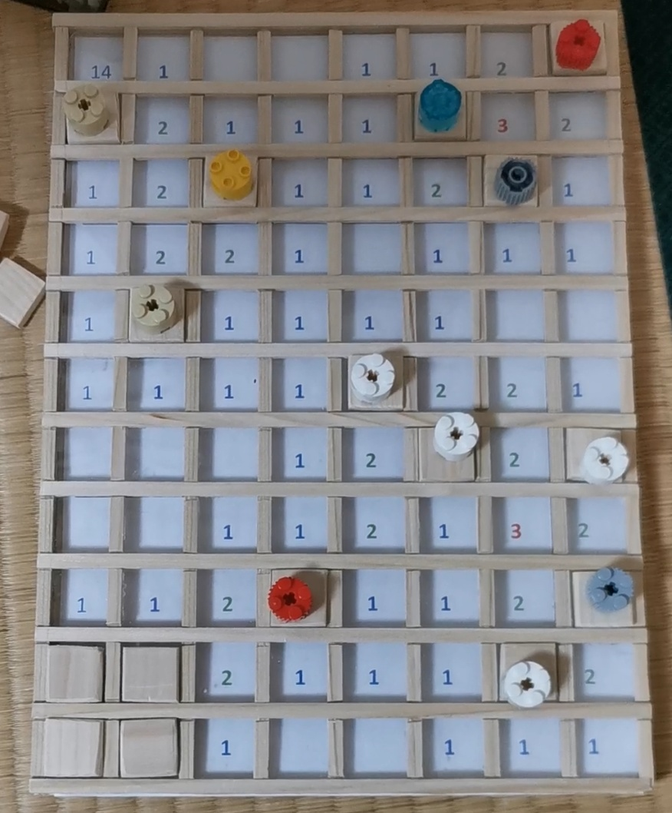

Intro
Let’s have a less serious post this time, for a change. Today I will explain how to create your own Minesweeper board game from simple materials, mostly cardboard.
Surprisingly, an obvious idea of creating a sort of "real-life" version of Minesweeper has left little trace on the net. I can mention a couple of projects like Post-it Minesweeper and Minesweeper with tactile interface. The first approach is cute, but it’s really just a one-time fun; the second one is a bit too large and serious, and it relies on electronics. My project uses software, but not right in the game process. The game is 100% battery-free.
Hardware v1
For starters, find a transparent plastic file folder like this:

Place two thin strips of cardboard (Amazon boxes are okay) along the long sides of the folder, and the third strip along one of its short sides. Cut a rectangular piece of cardboard so it can cover up the whole structure and glue it on cardboard strips. Put aside the folder for a while.
As a result, you should get a tray like this:
For the sake of clarity, I made tray parts thicker on this picture than they are actually going to be.
Now, let’s prepare some cardboard squares. If we assume the 7 × 9 game field (like I have), 7 × 9 = 63 squares are necessary. Each square should be around 26mm × 26mm in size.
At this point we can already test the game. Print a level on an A4 paper sheet, put it without looking under the folder containing an empty paper sheet (it will cover the picture), and place the resulting "sandwich" into the tray. Next, tile the tray with our paper squares, remove the empty sheet from the tray, and let’s play!
The photo below shows a slightly improved version of this setup:
Here the tray is covered above with a cardboard frame with somewhat wider margins to keep the paper squares in place. Since the level is printed on a computer, I had to leave some space for page margins, unreachable for a printer. That’s why the square pieces are made a bit smaller than needed to tile up an A4 sheet. It’s also easier to take them away if they are not crammed together too tightly. I don’t have dedicated pieces for flags, so we simply rely on LEGO parts.
Software
Game levels are generated with an Excel macro. This method allows to adjust cells sizes quickly by hand (note that border cells can be narrower — they get additional space from page margins) and draw cell borders. The macro, naturally, can generate as many mines as we want:
I think a game field of this size should contain 10-11 mines.
We also quickly identified some drawbacks of this design, while playing with it. First, there is no indication of the total number of mines in the game. Second, the very first move can uncover a mine, resulting in an immediate "game over". The original computer Minesweeper doesn’t work like this: the level is generated after the first move is made, and the very first cell chosen by the user is guaranteed to be mine-free.
It turned out that both issues can be solved simultaneously. By setting both options Mine count and Zero cell to TRUE we prevent mine generation in all the cells adjacent to the top left corner cell. Thus, all these cells become safe, and the top left cell can be used as a mine count indicator. We also have a more "hardcore" version with a mine count indicator, but without any safety guarantees (let’s call it a "realistic" mode).
Hardware v2
In principle, we can finish right here. However, I wanted to create a somewhat more robust game board. Initially I thought to make a version that would fix two specific flaws: 1) it’s easy to knock the square pieces from their places during the game; 2) it’s annoying to fiddle with the plastic folder all the time. The idea was to cut the folder into two plastic sheets and glue one of them on top of the tray, and create a grid of cardboard strips to keep the square pieces in place.
After estimating the amount of work required I decided that the cardboard version won’t pay off, and remade everything using wooden planks. Generally, the structure is the same:

Here we again have a paper tray (made of wood this time) with a plastic sheet glued on top, and a grid of wooden planks above it. The level grew larger (it is 8 × 11 now with 14 mines), and the square pieces are also made of wood.
The game process is show on the video below:
And here is the Excel macro used for level generation.